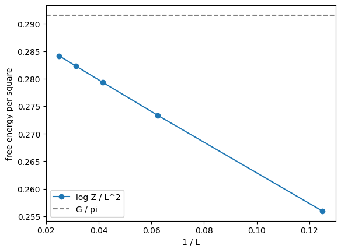
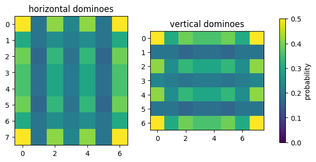

Domino tilings and dimer probabilities¶
This tutorial uses TorchPfaffian on a classic problem of statistical physics: the dimer model. A domino tiling of an \(R \times C\) board is a perfect matching of the grid graph: every square is covered by exactly one domino, which pairs it with a neighbour. Kasteleyn (1961) and Temperley and Fisher (1961) showed that, for a planar graph, the number of perfect matchings is a Pfaffian:
where \(K\) is the Kasteleyn matrix: a skew-symmetric adjacency matrix whose signs are chosen so that every matching contributes with the same sign. For the grid, horizontal edges get \(+1\) and vertical edges get \((-1)^c\), where \(c\) is the column.
With edge weights \(w_e\), \(Z(w) = |\mathrm{Pf}(K(w))|\) is the partition function of the dimer model, and the probability that edge \(e\) belongs to a random tiling is a derivative,
which autograd computes for every edge in a single backward pass.
import math
import matplotlib.pyplot as plt
import torch
from torch_pfaffian import pfaffian, slog_pfaffian
The Kasteleyn matrix¶
The function below builds \(K\) from the horizontal weights, of shape (..., R, C - 1), and the vertical
weights, of shape (..., R - 1, C). It accepts any leading batch shape and is differentiable in the
weights.
def kasteleyn_matrix(horizontal: torch.Tensor, vertical: torch.Tensor) -> torch.Tensor:
rows, columns = vertical.shape[-2] + 1, horizontal.shape[-1] + 1
site = torch.arange(rows * columns).reshape(rows, columns)
batch_shape = horizontal.shape[:-2]
matrix = horizontal.new_zeros(*batch_shape, rows * columns, rows * columns)
signs = (-1.0) ** torch.arange(columns, dtype=vertical.dtype) # Kasteleyn signs of the vertical edges
for start, end, weights in [
(site[:, :-1], site[:, 1:], horizontal),
(site[:-1, :], site[1:, :], vertical * signs),
]:
matrix[..., start.flatten(), end.flatten()] = weights.flatten(-2)
matrix[..., end.flatten(), start.flatten()] = -weights.flatten(-2)
return matrix
def uniform_weights(rows: int, columns: int) -> tuple[torch.Tensor, torch.Tensor]:
horizontal = torch.ones(rows, columns - 1, dtype=torch.float64)
vertical = torch.ones(rows - 1, columns, dtype=torch.float64)
return horizontal, vertical
Counting tilings¶
The number of tilings of a few boards, compared with the known values (OEIS A099390). A board with an odd number of squares has no tiling, and its Kasteleyn matrix has an odd dimension, whose Pfaffian is 0.
known = {(2, 2): 2, (2, 10): 89, (3, 3): 0, (3, 4): 11, (4, 4): 36, (6, 6): 6728, (8, 8): 12988816}
for (rows, columns), expected in known.items():
count = pfaffian(kasteleyn_matrix(*uniform_weights(rows, columns))).abs().item()
print(f"{rows} x {columns}: {round(count):>10d} tilings (expected {expected})")
assert round(count) == expected
2 x 2: 2 tilings (expected 2)
2 x 10: 89 tilings (expected 89)
3 x 3: 0 tilings (expected 0)
3 x 4: 11 tilings (expected 11)
4 x 4: 36 tilings (expected 36)
6 x 6: 6728 tilings (expected 6728)
8 x 8: 12988816 tilings (expected 12988816)
The count grows like \(e^{G R C / \pi}\), with \(G \approx 0.916\) Catalan’s constant, so it soon
exceeds the range of float64 even though the Pfaffian of a moderate matrix is easy to compute.
slog_pfaffian works in the log domain and returns \(\log Z\) directly. The free energy per square,
\(\log Z / (R C)\), approaches \(G / \pi\) as the board grows; the difference is the boundary contribution,
which decreases like \(1 / L\).
catalan = 0.915965594177219015054603514932
sizes = [8, 16, 24, 32, 40]
free_energies = []
for size in sizes:
_, log_count = slog_pfaffian(kasteleyn_matrix(*uniform_weights(size, size)))
free_energies.append(log_count.item() / size**2)
print(f"{size:>2d} x {size:<2d}: log Z = {log_count.item():8.2f}, log Z / L^2 = {free_energies[-1]:.5f}")
print(f"G / pi = {catalan / math.pi:.5f}")
plt.plot([1 / size for size in sizes], free_energies, "o-", label="log Z / L^2")
plt.axhline(catalan / math.pi, color="gray", linestyle="--", label="G / pi")
plt.xlabel("1 / L")
plt.ylabel("free energy per square")
plt.legend()
plt.show()
8 x 8 : log Z = 16.38, log Z / L^2 = 0.25593
16 x 16: log Z = 69.97, log Z / L^2 = 0.27333
24 x 24: log Z = 160.88, log Z / L^2 = 0.27931
32 x 32: log Z = 289.12, log Z / L^2 = 0.28234
40 x 40: log Z = 454.67, log Z / L^2 = 0.28417
G / pi = 0.29156

Dimer probabilities from the gradient¶
The gradient of \(\log Z\) with respect to the weights, at \(w = 1\), gives the probability that each edge carries a domino. Every square is covered exactly once, so the probabilities of the edges around a square sum to 1, which the cell checks.
rows, columns = 8, 8
horizontal, vertical = (weights.requires_grad_(True) for weights in uniform_weights(rows, columns))
_, log_count = slog_pfaffian(kasteleyn_matrix(horizontal, vertical))
log_count.backward()
horizontal_probability = (horizontal * horizontal.grad).detach()
vertical_probability = (vertical * vertical.grad).detach()
coverage = torch.zeros(rows, columns, dtype=torch.float64)
coverage[:, :-1] += horizontal_probability
coverage[:, 1:] += horizontal_probability
coverage[:-1, :] += vertical_probability
coverage[1:, :] += vertical_probability
print(f"coverage of each square: min {coverage.min():.15f}, max {coverage.max():.15f}")
assert torch.allclose(coverage, torch.ones_like(coverage))
figure, axes = plt.subplots(1, 2, figsize=(8, 4))
for axis, probability, title in zip(
axes, [horizontal_probability, vertical_probability], ["horizontal dominoes", "vertical dominoes"]
):
image = axis.imshow(probability, vmin=0, vmax=0.5, cmap="viridis")
axis.set_title(title)
figure.colorbar(image, ax=axes, shrink=0.8, label="probability")
plt.show()
coverage of each square: min 1.000000000000000, max 1.000000000000000

Near the corners the dominoes are strongly ordered: a corner square is covered by a horizontal or a vertical domino with probability \(1/2\) each, while the probabilities in the bulk tend to \(1/4\).
Many weightings at once¶
Every function takes a leading batch dimension. Here 256 random weightings of the \(8 \times 8\) board are
evaluated in one call, and their edge probabilities in one backward pass. On a GPU, moving the weights with
.cuda() is the only change.
generator = torch.Generator().manual_seed(0)
horizontal = torch.rand(256, rows, columns - 1, dtype=torch.float64, generator=generator).requires_grad_(True)
vertical = torch.rand(256, rows - 1, columns, dtype=torch.float64, generator=generator).requires_grad_(True)
_, log_partition = slog_pfaffian(kasteleyn_matrix(horizontal, vertical))
log_partition.sum().backward()
corner = horizontal[:, 0, 0] * horizontal.grad[:, 0, 0] + vertical[:, 0, 0] * vertical.grad[:, 0, 0]
print(
log_partition.shape,
"partition functions; corner coverage:",
torch.allclose(corner, torch.ones(256, dtype=torch.float64)),
)
torch.Size([256]) partition functions; corner coverage: True